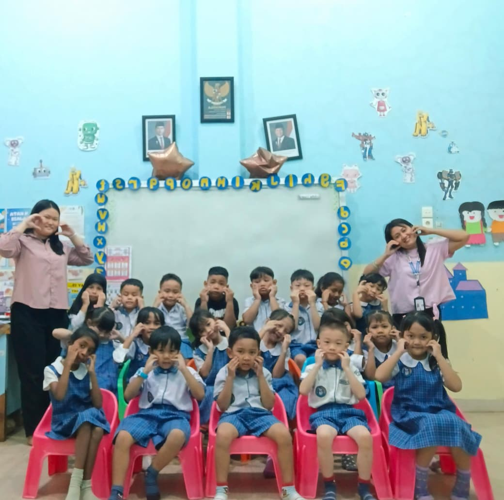
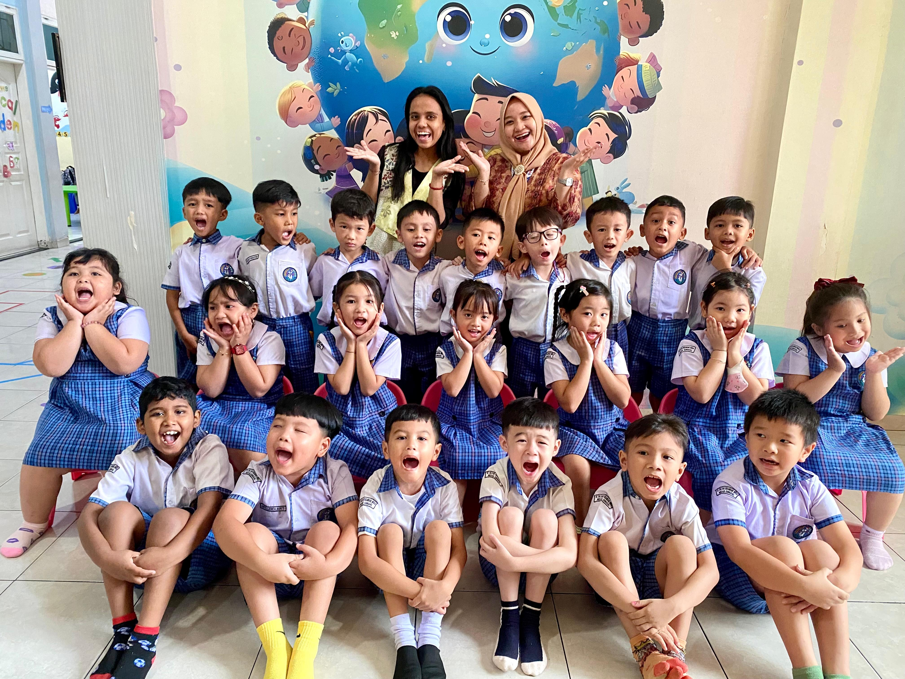
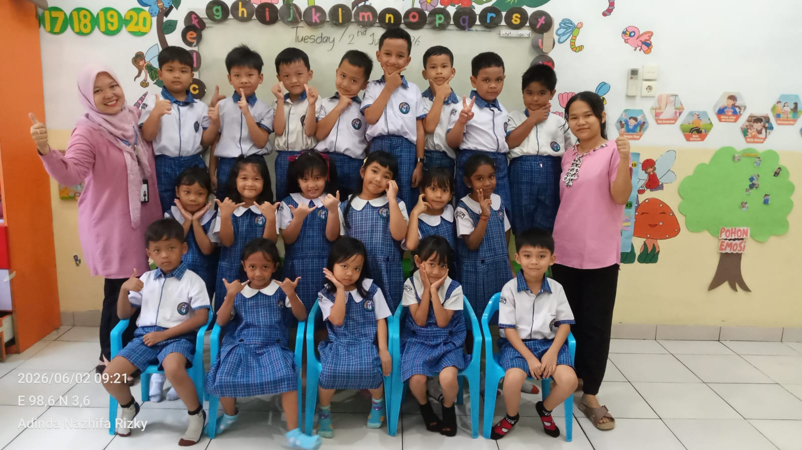
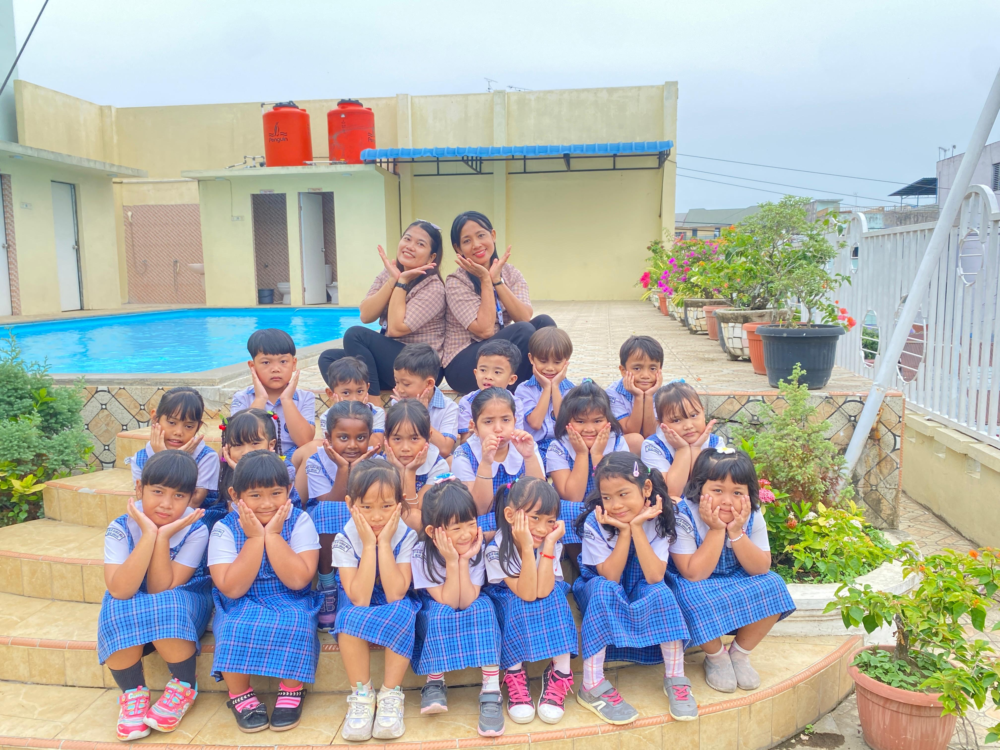
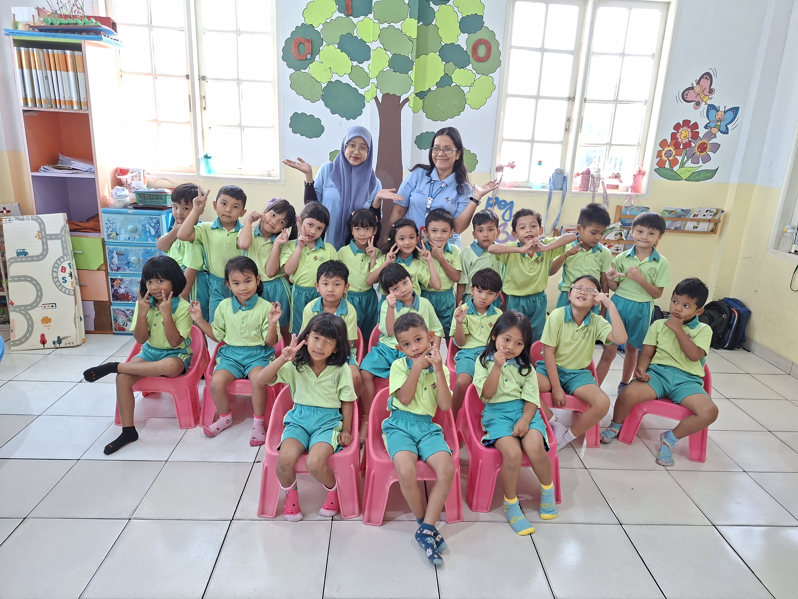
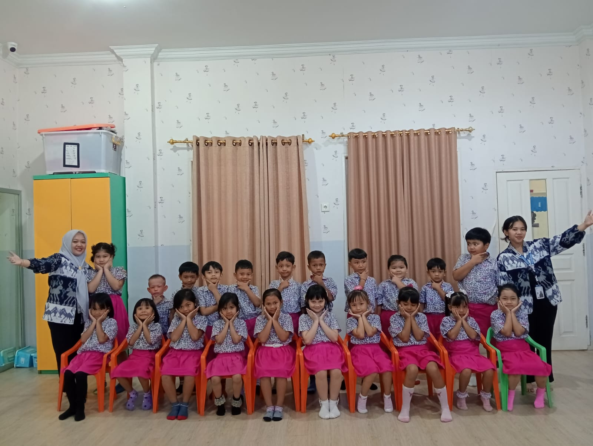
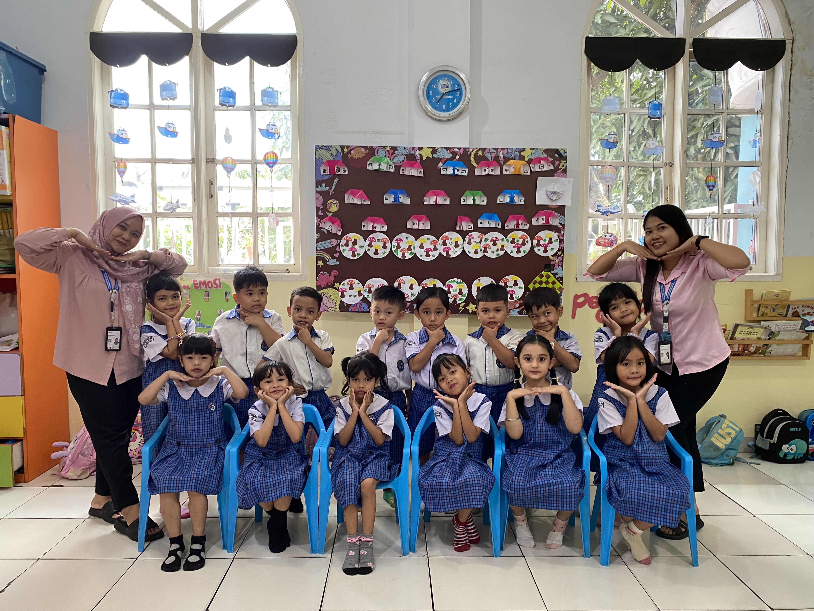
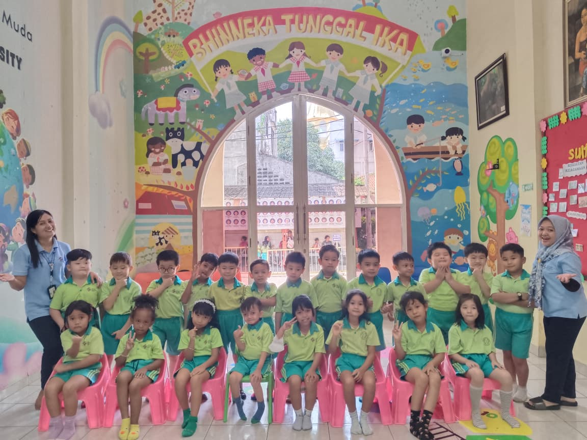
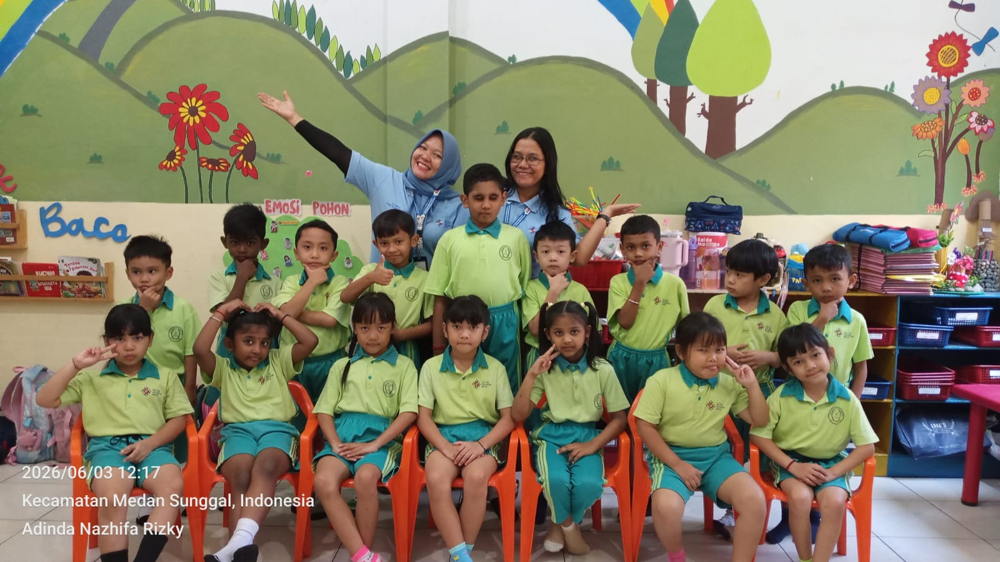

Halo Mama dan Papa
Dengan penuh rasa syukur kepada Tuhan Yang Maha Esa, kami mengundang Mama dan Papa untuk hadir dalam momen istimewa Pelepasan Peserta Didik TK B Tahun Pelajaran 2025 / 2026. Hari yang penuh kebahagiaan ini menjadi langkah awal perjalanan anak-anak menuju masa depan yang lebih cerah. Mari bersama-sama menyaksikan senyum, semangat, dan pencapaian luar biasa putra-putri tercinta yang telah menyelesaikan masa belajarnya di TK Swasta Sultan Iskandar Muda. Kehadiran Mama dan Papa akan menjadi hadiah terindah bagi anak-anak pada hari yang berkesan ini.
Detail Acara
Sabtu
13 Juni 2026
Waktu
08.00 WIB
Lokasi
Gedung Auditorium
YP Sultan Iskandar Muda
🎓 Susunan Acara Graduation Celebration 🎓
-
...
- Penayangan Video TK / YP. SIM
- Dance TK A "Better When I'm Dancing"
- Solo Drum TK A "Bukan Superman"
- Penampilan Tari Tradisional TK B
- Paduan Suara TK B "Andaikan Aku Punya Sayap"
- Dance SD
- Pembukaan oleh MC
- Menyanyikan Lagu Indonesia Raya dan Mars YP. SIM
- Doa Lintas Agama
- Penampilan Tari Kolosal
- Kolaborasi Pianika dan Angklung "Soleram"
- Kata Sambutan Kepala Sekolah TK SIM
- Penampilan Cheers "Bubble Star"
- Kata Sambutan Mewakili Orang Tua Peserta Didik
- Penampilan Drama Musikal "Petualangan ke Masa Depan"
- Kata Sambutan Ketua Dewan Pembina Yayasan Perguruan Sultan Iskandar Muda
- Prosesi Pelepasan Secara Simbolis oleh Ketua Dewan Pembina Yayasan Perguruan Sultan Iskandar Muda dan Pemberian Cendera Mata
- Penampilan Lagu Bahasa Mandarin "Tian Zhi Da"
- Pembacaan Puisi (Prosesi Sujud dan Pemberian Bunga kepada Orang Tua) diiringi Nyanyian oleh 2 Guru
- Prosesi Pelepasan Secara Keseluruhan
- Paduan Suara "See You Again"
- Lagu Persembahan dari Guru-Guru
- Penutupan oleh MC
📸 Galeri Kenangan 📸

✨ Kelas TK B1 ✨

✨ Kelas TK B2 ✨

✨ Kelas TK B3 ✨

✨ Kelas TK B4 ✨

✨ Kelas TK B5 ✨

✨ Kelas TK B6 ✨

✨ Kelas TK B7 ✨

✨ Kelas TK B8 ✨

✨ Kelas TK B9 ✨
💖 Terima Kasih 💖
Terima kasih kepada seluruh guru, orang tua, dan pihak sekolah yang telah membimbing serta mendukung perjalanan anak-anak selama menempuh pendidikan.